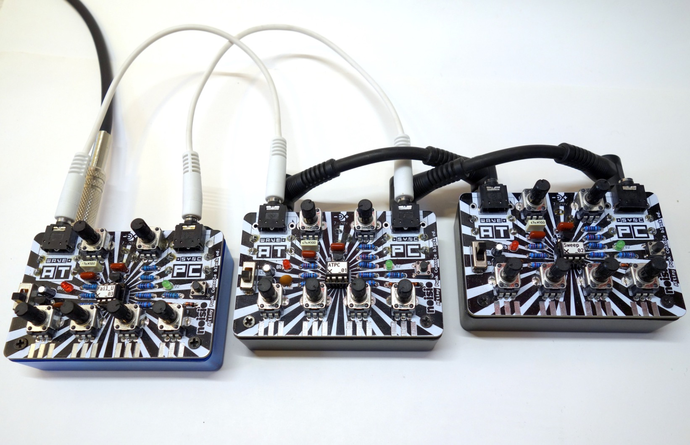

ATtiny85 implementation of Atari Punk Console

The ATtiny Punk Console (ATPC) is a programmable 8-bit mini synthesizer. From Noise Toy, over Drum Sound Generator, Atari Punk Console to Drone Generator - everything is possible! Short audio sequences can be used to upload new synth programs via smartphone or PC to remap the 4 potentiometers. Own codes can be programmed via the Arduino IDE.
All DB data
- Name: ATtiny Punk Console
- Author: Noisio
- Link: https://github.com/noisio/ATtiny-Punk-Console
- Demo: https://www.youtube.com/watch?v=xHvSwE6VFqs
- Picture: ../pics/attiny-punk-console.jpg
- Description: ATtiny85 implementation of Atari Punk Console
- Notes: The ATtiny Punk Console (ATPC) is a programmable 8-bit mini synthesizer. From Noise Toy, over Drum Sound Generator, Atari Punk Console to Drone Generator - everything is possible! Short audio sequences can be used to upload new synth programs via smartphone or PC to remap the 4 potentiometers. Own codes can be programmed via the Arduino IDE.
- Artifacts: {“Schematic”=>true}{“PCB”=>false}{“BOM”=>true}{“FW”=>true}{“Docs”=>false}{“Enclosure”=>false}
- Tags: KitDigital
- Level: Newbe
{kind=link}